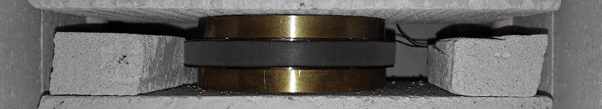
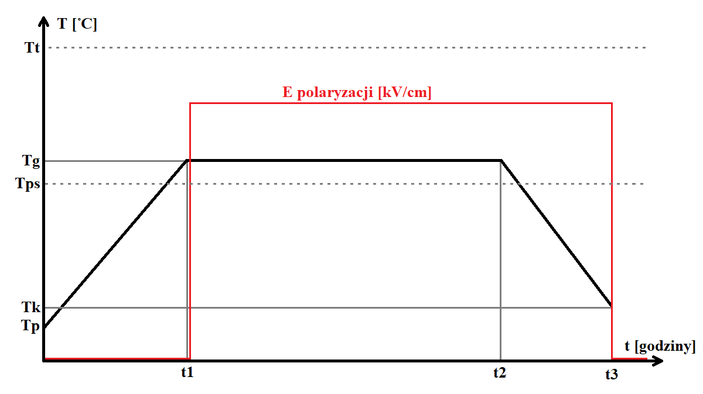
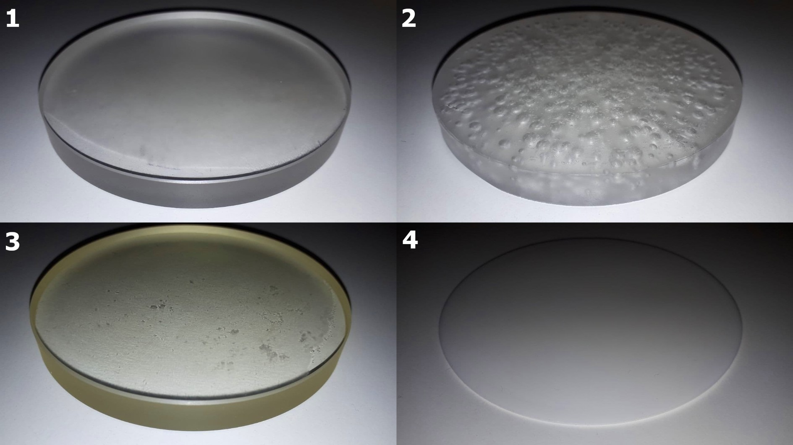

Electret is by analogy a permanent magnet but with electric field instead of magnetic field. Its widest use is in electret microphones or as a source of a static field for dust collection or ion detection. In great simplification, an electret is a dielectric body with a charge or dipole moment frozen inside in a way that creates a permanent external electric field. There are many ways to obtain an electret, such as: photo and radioelectric, implanted charge, magnetoelectric, mechanoelectric… However, the easiest one to execute is the thermoelectric method, which relays only on temperature and voltage delivered to the sample. In the simplest setup, we need a dielectric stacked between two HV plates and placed in an oven. Such setup is shown below.
The dielectric used to make an electret should have relatively low glass transition temperature (for easier processing) and lowest possible conductivity. Depending on a type of material, a different dominant charge will develop inside the sample. In PMMA (Acrylic) there will be a strong hetero-charge due to reorienting internal dipoles and in Teflon there will be a hetero-charge due to trapped charge flow and a small homocharge due to injection of electrons on the surface. Type of charge also depends on applied voltage. I will not focus on phenomena of charge decay and get straight to experiment.
The above graph shows the course of polarization of the sample. Up to t1 sample is heated to a temperature Tg slightly above Tps which is a glass transition temperature of a sample. Then HV supply is turned on. The sample is then held in polarizing field until the end of the process. Temperature Tt is melting temp. of material. In case of PMMA its glass transition temperature is theoretically 105C with melting point somewhere around 140C however it varies strongly depending on quality and purity of material which is hard to figure out given that material used was of unknown origin. Glass transition was determined by rising the furnace temperature in 3C increments and testing the material organoleptically. Glass transition can be observed through change in mechanic properties. Despite getting the glass transition temperature right, there were some problems with maintaining proper temperature in the furnace as the thermostat was causing temperature fluctuations which damaged the sample. Such effect can be seen below in example 2. After insulating the sample, the problem was removed at a cost of increasing heating and cooling times.
There were 8 samples in total 4 PMMA and 4 Teflon. I will not share specific parameters, as they will vary from material to material. Heating up was set to 2h and cooling down to 3-8h. Duration of polarization varied between 2h up to 23h. Polarizing field was set to 8[kV/cm] for PMMA samples and 75[kV/cm] for Teflon ones. First PMMA sample (ex.1 above) was polarized for only 2h and after cooling down a clearly perceptible electric field could be observed, however in 4h, completely vanished. PMMA sample (ex.2) was thermally damaged when polarization time was extended to 8 hours and temperature raised by 6C. After this test the additional insulation was added and with identical parameters the test was repeated resulting in sample ex.3. While sample 2 was not showing any signs of external electric field, sample 3 exhibited very strong field which was stable for 8h and vanished after 10h. All Teflon samples were visually identical as ex.4. Teflon samples were held in a stronger polarizing field and for much longer. In effect, they retained charge for up to 48h and decayed slower, but field wasn’t as strong as in PMMA samples.
The last Teflon sample was tested under an electroscope (built in the previous post) to observe and measure its field distribution. Map of field can be seen above. It’s surprising that charge has developed or decayed uniformly, given that polarizing was conducted in a very controlled manner. Only one sample was tested as the electroscope wasn’t available at the time of making the electrets resulting in loss of original field. The last sample was made several hours before measurement. Top resulted value for PMMA electrets was 2,8 [10-8 C/cm2] (ex.3).
Experiment proved that electrets can be made with this method in a repeatable and easily controlled manner. However, the quality of material made it impossible to create stable electret due to internal currents causing charge decay. In the future, I will try creating stable electret using Carnauba wax in an attempt to use it as a static generator.